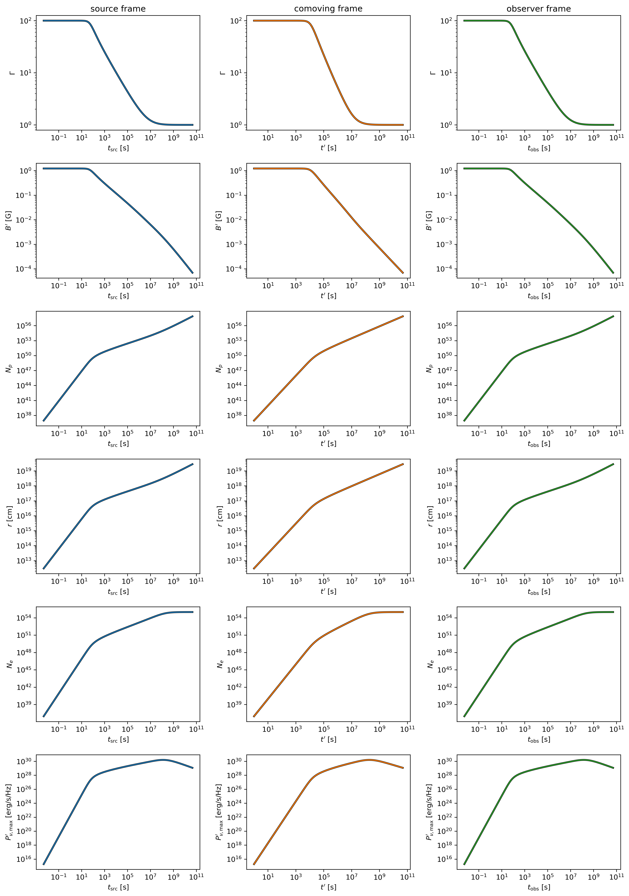
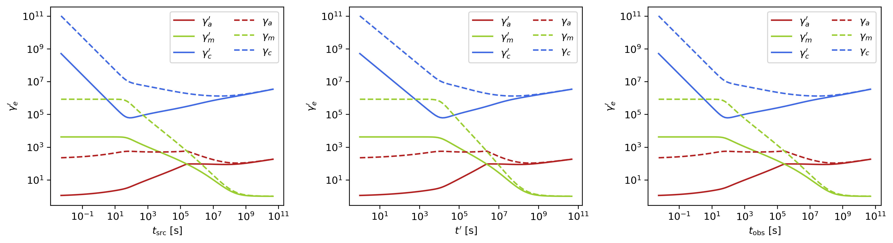
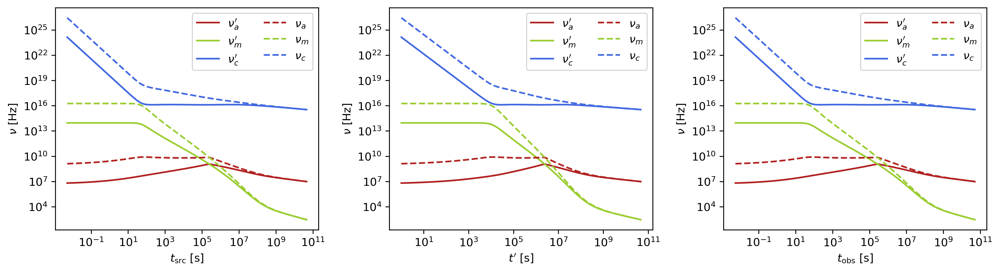
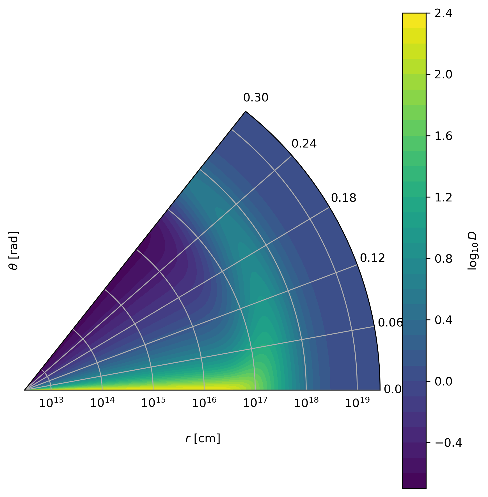
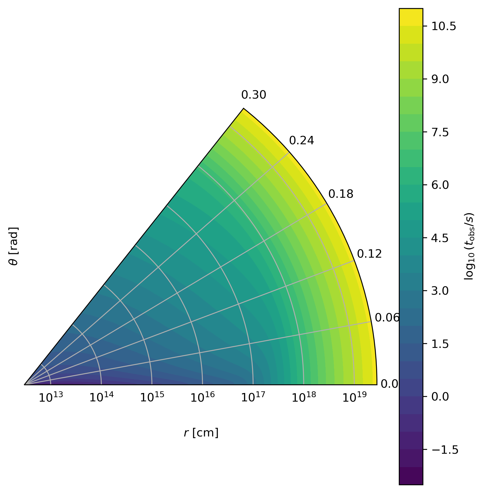

Internal Quantities Evolution
This section demonstrates advanced access to internal simulation quantities. For basic model setup, see Quickstart.
VegasAfterglow provides comprehensive access to internal simulation quantities, allowing you to analyze the temporal evolution of physical parameters across different reference frames. This enables detailed investigation of shock dynamics, microphysical parameters, and relativistic effects throughout the afterglow evolution.
Model Setup for Internal Analysis
Similar to the light curve generation, let’s set up the physical components of our afterglow model with additional resolution parameters for detailed internal tracking:
import numpy as np
import matplotlib.pyplot as plt
from VegasAfterglow import ISM, TophatJet, Observer, Radiation, Model
medium = ISM(n_ism=1)
jet = TophatJet(theta_c=0.3, E_iso=1e52, Gamma0=100)
z = 0.1
obs = Observer(lumi_dist=1e26, z=z, theta_obs=0.)
rad = Radiation(eps_e=1e-1, eps_B=1e-3, p=2.3)
# Include resolution parameters for detailed internal tracking
model = Model(jet=jet, medium=medium, observer=obs, fwd_rad=rad, resolutions=(0.1,0.5,5))
Accessing Simulation Quantities
Now, let’s access the internal simulation quantities using the details method:
# Get the simulation details over a time range
details = model.details(t_min=1e0, t_max=1e8)
# Print the available attributes
print("Simulation details attributes:", dir(details))
print("Forward shock attributes:", dir(details.fwd))
You will get a SimulationDetails object with the following structure:
Main grid coordinates:
details.phi: 1D numpy array of azimuthal angles in radiansdetails.theta: 1D numpy array of polar angles in radiansdetails.t_src: 3D numpy array of source frame times on coordinate (phi_i, theta_j, t_k) grid in seconds
Forward shock details (accessed via ``details.fwd``):
details.fwd.t_comv: 3D numpy array of comoving times for the forward shock in secondsdetails.fwd.t_obs: 3D numpy array of observer times for the forward shock in secondsdetails.fwd.Gamma: 3D numpy array of downstream Lorentz factors for the forward shockdetails.fwd.Gamma_th: 3D numpy array of thermal Lorentz factors for the forward shockdetails.fwd.r: 3D numpy array of lab frame radii in centimetersdetails.fwd.B_comv: 3D numpy array of downstream comoving magnetic field strengths for the forward shock in Gaussdetails.fwd.theta: 3D numpy array of polar angles for the forward shock in radiansdetails.fwd.N_p: 3D numpy array of downstream shocked proton number per solid angle for the forward shockdetails.fwd.N_e: 3D numpy array of downstream synchrotron electron number per solid angle for the forward shockdetails.fwd.gamma_a: 3D numpy array of comoving frame self-absorption Lorentz factors for the forward shockdetails.fwd.gamma_m: 3D numpy array of comoving frame injection Lorentz factors for the forward shockdetails.fwd.gamma_c: 3D numpy array of comoving frame cooling Lorentz factors for the forward shockdetails.fwd.gamma_M: 3D numpy array of comoving frame maximum Lorentz factors for the forward shockdetails.fwd.nu_a: 3D numpy array of comoving frame self-absorption frequencies for the forward shock in Hzdetails.fwd.nu_m: 3D numpy array of comoving frame injection frequencies for the forward shock in Hzdetails.fwd.nu_c: 3D numpy array of comoving frame cooling frequencies for the forward shock in Hzdetails.fwd.nu_M: 3D numpy array of comoving frame maximum frequencies for the forward shock in Hzdetails.fwd.I_nu_max: 3D numpy array of comoving frame synchrotron maximum specific intensities for the forward shock in erg/cm²/s/Hzdetails.fwd.Doppler: 3D numpy array of Doppler factors for the forward shockdetails.fwd.sync_spectrum: Per-cell callable synchrotron spectrum (see Per-Cell Spectrum Evaluation)details.fwd.ssc_spectrum: Per-cell callable SSC spectrum (Noneifssc=False)details.fwd.Y_spectrum: Per-cell callable Compton-Y parameter
Reverse shock details (accessed via ``details.rvs``, if reverse shock is enabled):
Similar attributes as forward shock but for the reverse shock component
Multi-Parameter Evolution Visualization
To analyze the temporal evolution of physical parameters across different reference frames, we can visualize how key quantities evolve in the source frame, comoving frame, and observer frame. This code creates a comprehensive multi-panel figure displaying the temporal evolution of fundamental shock parameters across all three reference frames:
attrs =['Gamma', 'B_comv', 'N_p','r','N_e','I_nu_max']
ylabels = [r'$\Gamma$', r'$B^\prime$ [G]', r'$N_p$', r'$r$ [cm]', r'$N_e$', r'$I_{\nu, \rm max}^\prime$ [erg/s/Hz]']
frames = ['t_src', 't_comv', 't_obs']
titles = ['source frame', 'comoving frame', 'observer frame']
colors = ['C0', 'C1', 'C2']
xlabels = [r'$t_{\rm src}$ [s]', r'$t^\prime$ [s]', r'$t_{\rm obs}$ [s]']
plt.figure(figsize= (4.2*len(frames), 3*len(attrs)))
#plot the evolution of various parameters for phi = 0 and theta = 0 (so the first two indexes are 0)
for i, frame in enumerate(frames):
for j, attr in enumerate(attrs):
plt.subplot(len(attrs), len(frames) , j * len(frames) + i + 1)
if j == 0:
plt.title(titles[i])
value = getattr(details.fwd, attr)
if frame == 't_src':
t = getattr(details, frame)
else:
t = getattr(details.fwd, frame)
plt.loglog(t[0, 0, :], value[0, 0, :], color='k',lw=2.5)
plt.loglog(t[0, 0, :], value[0, 0, :], color=colors[i])
plt.xlabel(xlabels[i])
plt.ylabel(ylabels[j])
plt.tight_layout()
plt.savefig('shock_quantities.png', dpi=300,bbox_inches='tight')
{kind=link}

Multi-parameter evolution showing fundamental shock parameters across three reference frames.
Electron Energy Distribution Analysis
This visualization focuses specifically on the characteristic electron energies (self-absorption, injection, and cooling) in both the comoving frame and observer frame, illustrating the relativistic transformation effects:
frames = ['t_src', 't_comv', 't_obs']
xlabels = [r'$t_{\rm src}$ [s]', r'$t^\prime$ [s]', r'$t_{\rm obs}$ [s]']
plt.figure(figsize= (4.2*len(frames), 3.6))
for i, frame in enumerate(frames):
plt.subplot(1, len(frames), i + 1)
if frame == 't_src':
t = getattr(details, frame)
else:
t = getattr(details.fwd, frame)
plt.loglog(t[0, 0, :], details.fwd.gamma_a[0, 0, :],label=r'$\gamma_a^\prime$',c='firebrick')
plt.loglog(t[0, 0, :], details.fwd.gamma_m[0, 0, :],label=r'$\gamma_m^\prime$',c='yellowgreen')
plt.loglog(t[0, 0, :], details.fwd.gamma_c[0, 0, :],label=r'$\gamma_c^\prime$',c='royalblue')
plt.loglog(t[0, 0, :], details.fwd.gamma_a[0, 0, :]*details.fwd.Doppler[0,0,:]/(1+z),label=r'$\gamma_a$',ls='--',c='firebrick')
plt.loglog(t[0, 0, :], details.fwd.gamma_m[0, 0, :]*details.fwd.Doppler[0,0,:]/(1+z),label=r'$\gamma_m$',ls='--',c='yellowgreen')
plt.loglog(t[0, 0, :], details.fwd.gamma_c[0, 0, :]*details.fwd.Doppler[0,0,:]/(1+z),label=r'$\gamma_c$',ls='--',c='royalblue')
plt.xlabel(xlabels[i])
plt.ylabel(r'$\gamma_e^\prime$')
plt.legend(ncol=2)
plt.tight_layout()
plt.savefig('electron_quantities.png', dpi=300,bbox_inches='tight')
{kind=link}

Evolution of characteristic electron energies showing relativistic transformation effects.
Synchrotron Frequency Evolution
This analysis tracks the evolution of characteristic synchrotron frequencies, demonstrating how the spectral break frequencies change over time and how Doppler boosting affects the observed spectrum:
frames = ['t_src', 't_comv', 't_obs']
xlabels = [r'$t_{\rm src}$ [s]', r'$t^\prime$ [s]', r'$t_{\rm obs}$ [s]']
plt.figure(figsize= (4.2*len(frames), 3.6))
for i, frame in enumerate(frames):
plt.subplot(1, len(frames), i + 1)
if frame == 't_src':
t = getattr(details, frame)
else:
t = getattr(details.fwd, frame)
plt.loglog(t[0, 0, :], details.fwd.nu_a[0, 0, :],label=r'$\nu_a^\prime$',c='firebrick')
plt.loglog(t[0, 0, :], details.fwd.nu_m[0, 0, :],label=r'$\nu_m^\prime$',c='yellowgreen')
plt.loglog(t[0, 0, :], details.fwd.nu_c[0, 0, :],label=r'$\nu_c^\prime$',c='royalblue')
plt.loglog(t[0, 0, :], details.fwd.nu_a[0, 0, :]*details.fwd.Doppler[0,0,:]/(1+z),label=r'$\nu_a$',ls='--',c='firebrick')
plt.loglog(t[0, 0, :], details.fwd.nu_m[0, 0, :]*details.fwd.Doppler[0,0,:]/(1+z),label=r'$\nu_m$',ls='--',c='yellowgreen')
plt.loglog(t[0, 0, :], details.fwd.nu_c[0, 0, :]*details.fwd.Doppler[0,0,:]/(1+z),label=r'$\nu_c$',ls='--',c='royalblue')
plt.xlabel(xlabels[i])
plt.ylabel(r'$\nu$ [Hz]')
plt.legend(ncol=2)
plt.tight_layout()
plt.savefig('photon_quantities.png', dpi=300,bbox_inches='tight')
{kind=link}

Evolution of characteristic synchrotron frequencies showing spectral break evolution and Doppler effects.
Doppler Factor Spatial Distribution
This polar plot visualizes the spatial distribution of the Doppler factor across the jet structure, showing how relativistic beaming varies with angular position and radial distance:
plt.figure(figsize=(6,6))
ax = plt.subplot(111, polar=True)
theta = details.fwd.theta[0,:,:]
r = details.fwd.r[0,:,:]
D = details.fwd.Doppler[0,:,:]
# Polar contour plot
scale = 3.0
c = ax.contourf(theta*scale, r, np.log10(D), levels=30, cmap='viridis')
ax.set_rscale('log')
true_ticks = np.linspace(0, 0.3, 6)
ax.set_xticks(true_ticks * scale)
ax.set_xticklabels([f"{t:.2f}" for t in true_ticks])
ax.set_xlim(0,0.3*scale)
ax.set_ylabel(r'$\theta$ [rad]')
ax.set_xlabel(r'$r$ [cm]')
plt.colorbar(c, ax=ax, label=r'$\log_{10} D$')
plt.tight_layout()
plt.savefig('doppler.png', dpi=300,bbox_inches='tight')
{kind=link}

Spatial distribution of Doppler factor showing relativistic beaming effects across the jet structure.
Equal Arrival Time Surface Visualization
This final visualization maps the equal arrival time surfaces in polar coordinates, illustrating how light from different parts of the jet reaches the observer at the same time, which is crucial for understanding light curve morphology:
plt.figure(figsize=(6,6))
ax = plt.subplot(111, polar=True)
theta = details.fwd.theta[0,:,:]
r = details.fwd.r[0,:,:]
t_obs = details.fwd.t_obs[0,:,:]
scale = 3.0
c = ax.contourf(theta*scale, r, np.log10(t_obs), levels=30, cmap='viridis')
ax.set_rscale('log')
true_ticks = np.linspace(0, 0.3, 6)
ax.set_xticks(true_ticks * scale)
ax.set_xticklabels([f"{t:.2f}" for t in true_ticks])
ax.set_xlim(0,0.3*scale)
ax.set_ylabel(r'$\theta$ [rad]')
ax.set_xlabel(r'$r$ [cm]')
plt.colorbar(c, ax=ax, label=r'$\log_{10} (t_{\rm obs}/s)$')
plt.tight_layout()
plt.savefig('EAT.png', dpi=300,bbox_inches='tight')
{kind=link}

Equal arrival time surfaces showing how light travel time effects determine light curve morphology.
Per-Cell Spectrum Evaluation
In addition to scalar quantities, details() provides callable spectrum accessors that let you evaluate the comoving-frame synchrotron, SSC, and Compton-Y spectra at arbitrary frequencies for each grid cell. To use SSC and Y spectrum, enable SSC in the radiation model:
rad = Radiation(eps_e=1e-1, eps_B=1e-3, p=2.3, ssc=True)
model = Model(jet=jet, medium=medium, observer=obs, fwd_rad=rad, resolutions=(0.1,0.5,5))
details = model.details(t_min=1e0, t_max=1e8)
nu_comv = np.logspace(8, 20, 200) # comoving frame frequency [Hz]
# Synchrotron spectrum at cell (phi=0, theta=0, t=5)
I_syn = details.fwd.sync_spectrum[0, 0, 5](nu_comv) # erg/s/Hz/cm²/sr
# SSC spectrum at the same cell (requires ssc=True)
I_ssc = details.fwd.ssc_spectrum[0, 0, 5](nu_comv) # erg/s/Hz/cm²/sr
# Compton-Y parameter as a function of electron Lorentz factor
gamma = np.logspace(1, 8, 200)
Y = details.fwd.Y_spectrum[0, 0, 5](gamma) # dimensionless
These callable accessors are also available on details.rvs when a reverse shock is configured. The sync_spectrum and Y_spectrum are always available; ssc_spectrum is None unless ssc=True.
Callable spectrum properties:
details.fwd.sync_spectrum[i, j, k](nu_comv): Comoving synchrotron specific intensity at given frequencies. Input: comoving frequency in Hz. Output: \(I_\nu\) in erg/s/Hz/cm²/sr.details.fwd.ssc_spectrum[i, j, k](nu_comv): Comoving SSC specific intensity. Same units as synchrotron. Only available whenssc=True.details.fwd.Y_spectrum[i, j, k](gamma): Compton-Y parameter as a function of electron Lorentz factor. Input: dimensionless \(\gamma\). Output: dimensionless \(Y(\gamma)\).